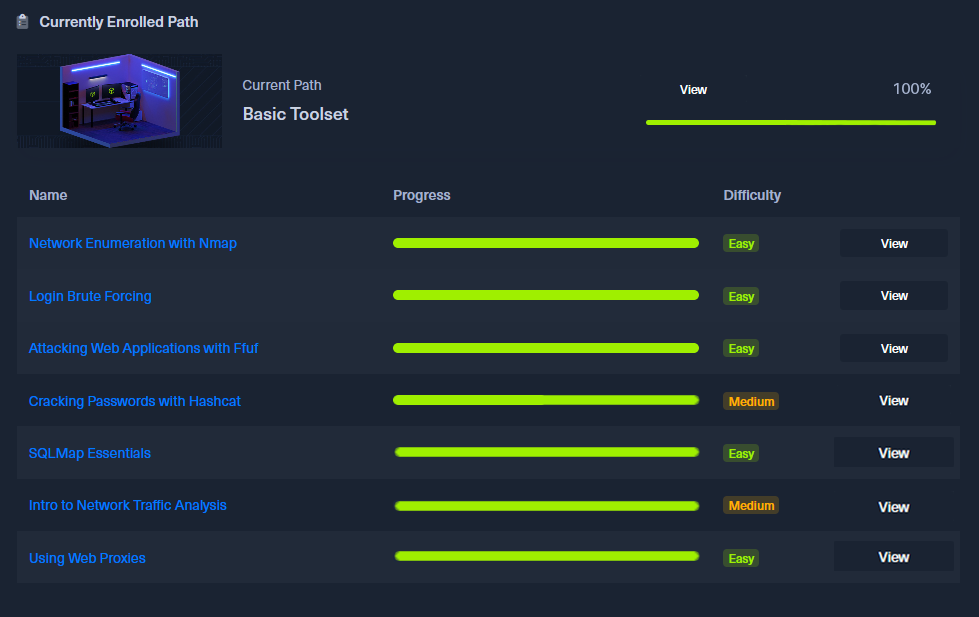
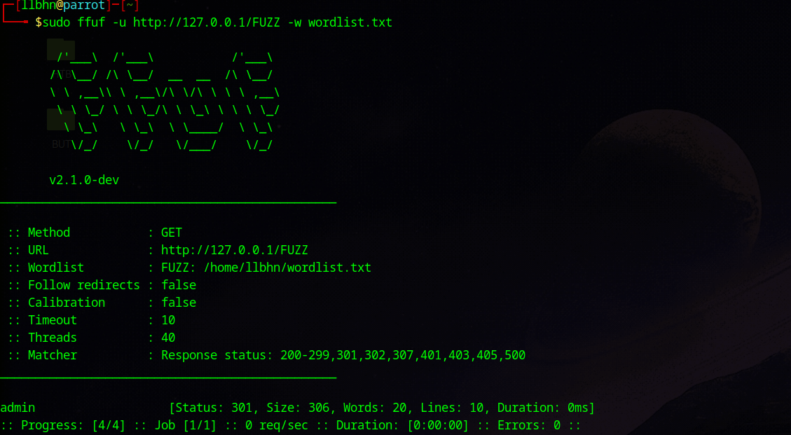
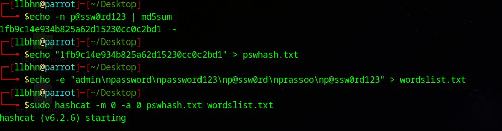
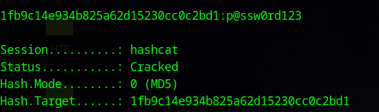
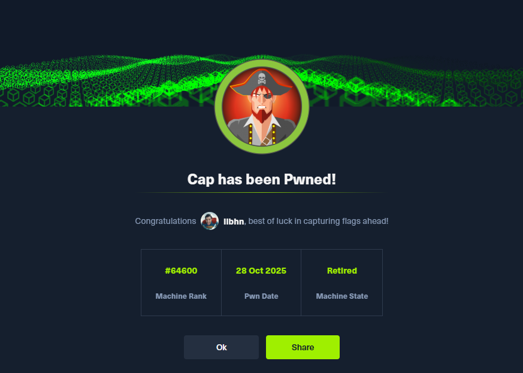
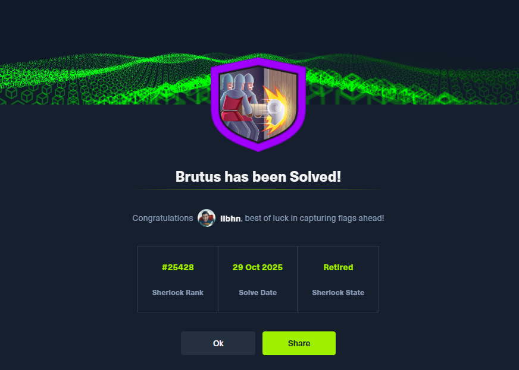

Mon Parcours sur Hack The Box – Penetration Tester
Objectif du Parcours
L'objectif de mon parcours sur Hack The Box est de développer des compétences en pentesting et en cybersécurité offensive, tout en adoptant une méthodologie structurée et réaliste.
Ce parcours complète mes projets Blue Team / SOC, en me permettant de mieux comprendre les techniques d'attaque afin d'améliorer leur détection et leur prévention.
Ce parcours démontre des compétences en :
- Méthodologie de penetration testing
- Reconnaissance réseau et web
- Attaques sur l'authentification
- Cracking de mots de passe
- Exploitation de vulnérabilités
- Analyse offensive et défensive
Progression sur le Penetration Tester Path (Basic Toolset)
J'ai complété l'intégralité du Basic Toolset, faisant partie du Penetration Tester Path.
Modules réalisés :
- Network Enumeration with Nmap
- Login Brute Forcing
- Attacking Web Applications with FFUF
- Cracking Passwords with Hashcat
- SQLMAP Essentials
- Intro to Network Traffic Analysis
- Using Web Proxies
Ces modules couvrent les outils essentiels utilisés lors des premières phases d'un test d'intrusion.

Vue du path + modules complétés
Reconnaissance et énumération (Nmap & FFUF)
Compétences mises en œuvre :
- Découverte des hôtes et services exposés
- Analyse des ports et versions
- Fuzzing de répertoires et endpoints web
- Interprétation des codes HTTP
Cette étape m'a permis de comprendre l'importance de la surface d'attaque et de la phase de reconnaissance dans tout scénario de compromission.

Scan Nmap avec découverte de services

Fuzzing avec FFUF - découverte de répertoires

Page découverte avec FFUF
Attaques sur l'authentification et mots de passe
Techniques et outils utilisés :
- Brute force avec Hydra
- Création de wordlists ciblées
- Cracking de hash avec Hashcat
- Identification des faiblesses de politiques de mots de passe
Cette étape met en évidence l'impact critique des mécanismes d'authentification mal sécurisés.

Brute force avec Hydra

Mise en place d'une procédure de cracking de hash

Hash cracké avec hashcat
Mise en pratique sur machine réelle : Cap
J'ai appliqué l'ensemble des compétences acquises sur la machine Cap :
- Énumération réseau et web
- Exploitation de failles logiques
- Accès utilisateur
Cette machine m'a permis de suivre une chaîne d'attaque complète, du scan initial à l'élévation de privilèges.

Machine pawned
Analyse et investigation : Sherlock Brutus
J'ai également résolu le Sherlock "Brutus", axé sur l'analyse d'événements de sécurité.
Compétences développées :
- Analyse de logs
- Corrélation d'événements
- Détection d'attaques par brute force
Ce travail fait directement le lien avec mes projets SOC / SIEM (Wazuh) et renforce ma compréhension du lien attaque ↔ détection.

Sherlock Brutus - Investigation complétée
Conclusion et Compétences Clés Démontrées
Ce parcours illustre une approche complète et équilibrée de la cybersécurité, combinant perspective offensive et défensive.
Compétences Clés Démontrées :
Liens avec mes Projets SOC :
- Meilleure compréhension des techniques d'attaque pour améliorer la détection
- Capacité à corréler les événements de sécurité avec les techniques réelles de pentesting
- Vision holistique : attaquant ↔ défenseur
- Fondations solides pour évoluer vers un rôle de SOC analyst ou pentester